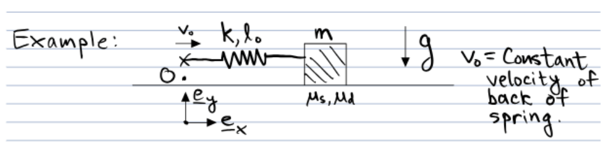

A Rigorous Definition of Friciton
Most of us have seen friction as a more-or-less mysterious force that opposes motion. We put it in our Free Body Diagrams and we put it in our F = ma sumations, but is friction really that simple? What if the floor that the friction force interacts with is moving? Or what if every object in the system is moving? How can we define friction then? Let's answer that.
Simple Friction
First, let's start with a definition of the relative (sliding) velocity between the object and the surface: \(\mathbf{v}_s = \mathbf{v} - \mathbf{v}_\text{wall}\).
Here, \(\mathbf{v}_s\) is the relative velocity between the object and the surface, \(\mathbf{v}\) is the velocity of the object, and \(\mathbf{v}_\text{wall}\) is the velocity of the surface (wall or floor). Now we can define friction based on different values of \(\mathbf{v}_s\).
If \( |\mathbf{v}_s| > 0 \), then \(\mathbf{F}_t = -\mu_d F_n \frac{\mathbf{v}_s}{|\mathbf{v}_s|}\)
If \( |\mathbf{v}_s| = 0 \), then \(|\mathbf{F}_t|\ \leq \mu_s F_n \)
Often we model \(\mu\) to be a function of \(|\mathbf{v}_s|\)
\(\mu = \mu_s\) if \( |\mathbf{v}_s| = 0 \) "Static Friction"
\(\mu = \mu_d\) if \( |\mathbf{v}_s| > 0 \) "Dynamic Friction"
Where \(\mu_s > \mu_d\)
Rigorously Defined Friction
The definition above is incomplete because it does not determine \(\mathbf{F}_t\) when \(|\mathbf{v}_s| = 0\), nor does it give the direction of \(\mathbf{F}_t\) the instant sliding first begins.
Lets add two resonable assumtions to resolve this:
Assumption 1:
If \(\mathbf{v}_s = 0\) and the value of \(\mathbf{F}_t\) that would make \(\dot{\mathbf{v}}_s = 0\) satisfies \(|\mathbf{F}_t| \leq \mu_s F_n\), then \(\mathbf{F}_t\) takes that value.
In mathematical terms, let us define \(\mathbf{F}^*\) as the sum of all external forces acting on the body, excluding the friction force \(\mathbf{F}_t\). The tangential component of \(\mathbf{F}^*\), denoted as \(\mathbf{F}_t^*\), is given by:
where \(\mathbf{e}_n\) is the unit normal vector perpendicular to the plane.
Applying Newton's second law to the object, we have:
Hence, the force needed for \(\dot{\mathbf{v}}_s = 0\) is:
If \(|\mathbf{F}_\text{trial}| \leq \mu_s F_n\), accept it as correct.
Finally we can say if \(|\mathbf{v}_s| = 0\) and \(|\mathbf{F}_\text{trial}| \leq \mu_s F_n\) then \(\mathbf{F}_t = \mathbf{F}_\text{trial}\)
Assumtion 2:
If \(\mathbf{v}_s = 0\) and \( |\mathbf{F}_{\text{trial}}| > \mu_s F_n \), then static friction cannot prevent motion. In this case, the friction force reaches its maximum value in the direction opposing motion:
This is equivalent to scaling down \(\mathbf{F}_{\text{trial}}\) to a magnitude of \(\mu_s F_n\).
Friction in action
If the block starts at rest and the spring begins unloaded, how does the block move?
Step One:
Use Cartesian coordinates with O at initial location of spring's back end.
Step Two:
Force Body Diagram

Step Three
Sum the forces using Newtons Second Law and then solve.
This can be simplified to
Where \( \mathbf{r}^A \) is the position of the fixed end of the spring, and \( l_0 \) is the natural (unstretched) length of the spring.
Balancing both sides of the equation gives us:
In this case, \(\mathbf{v}_\text{wall} = 0\) so \(\mathbf{v}_s = \dot{x}\mathbf{e}_x\) and \(\mathbf{F}_\text{trial} -\mathbf{F}_t^* = -\mathbf{F}_s\)
Quick Summary
Everything that I have talked about so far is quite convoluted and hard to wrap your brain around so here I am going to attempt to summarize everything to make it easier to understand.
First we define \(\mathbf{F}^*\) as the sum of all forces except for \(\mathbf{F}_t\) on a body.
\(\mathbf{F}_t^* = \mathbf{F}^* - (\mathbf{F}^* \cdot \mathbf{e}_n)\mathbf{e}_n\) is the part of \(\mathbf{F}^*\) tangent to the plane.
\(\mathbf{F}_\text{trial} = m[\dot{\mathbf{v}}_\text{wall} - (\mathbf{e}_n \cdot \dot{\mathbf{v}}_\text{wall})\mathbf{e}_n] - \mathbf{F}_t) \) is the force the friction would have to supply to keep the object from sliding.
Finally, the force of friction can thus be expressed by: